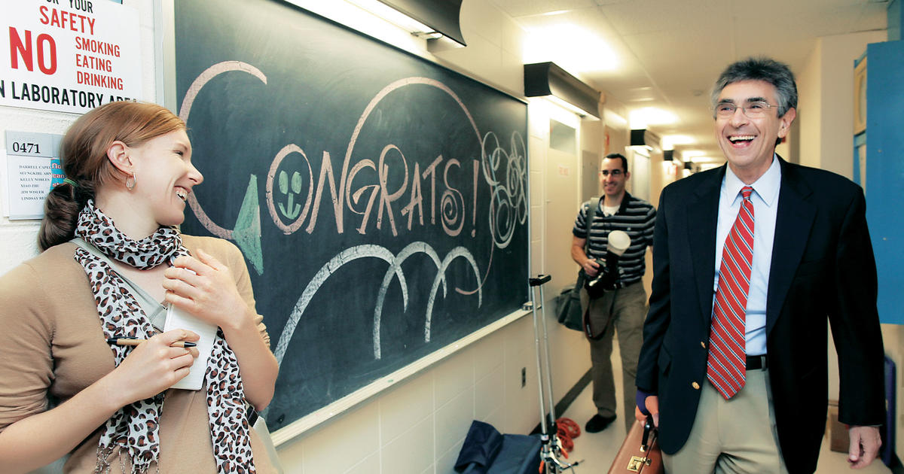
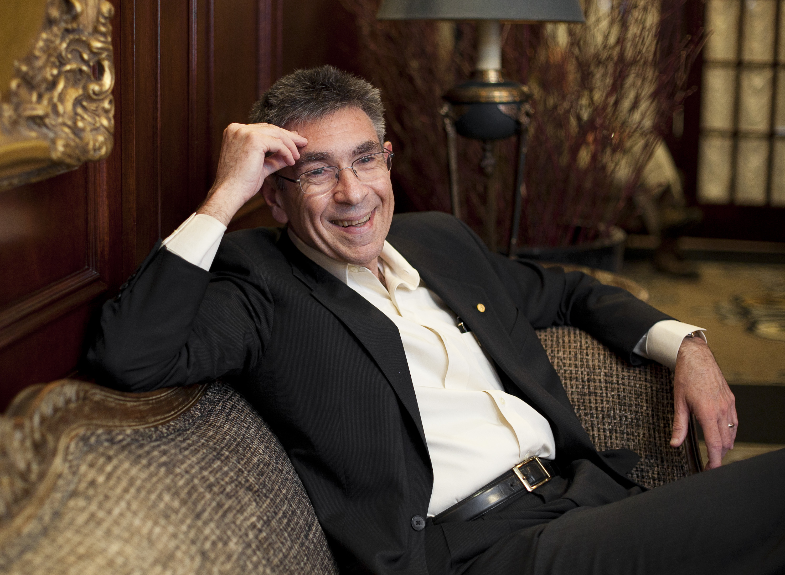

Lefkowitz
November 30, 2022
• 65 lIkes
• 75 replies
• 18 mentions
Last updated November 30, 2022
ADr. Robert Lefkowitz is an American physician and biochemist who was born on April 15, 1943, in the Bronx, New York. He is best known for his groundbreaking research on G-protein-coupled receptors (GPCRs), a family of membrane proteins that play a crucial role in cell signaling.
Childhood and early life
As a child, Lefkowitz showed an early interest in science and medicine. He was particularly fascinated by the workings of the human body and spent hours reading books on anatomy and physiology. He also enjoyed tinkering with electronics and built his own radio transmitter when he was a teenager.

Lefkowitz attended Columbia University for his undergraduate studies, where he majored in chemistry. He then went on to attend Columbia's College of Physicians and Surgeons, where he received his medical degree in 1966. During his medical training, Lefkowitz became interested in the emerging field of biochemistry and decided to pursue a career in research.
High School Education
Robert Lefkowitz attended Columbia University for his undergraduate studies, where he received a Bachelor of Arts degree in Chemistry in 1962. During his time at Columbia, Lefkowitz was a member of the Phi Beta Kappa honor society and was also active in the campus radio station.
At Duke, Lefkowitz continued his research on G-protein-coupled receptors (GPCRs) and made many groundbreaking discoveries in the field. He was also active in teaching and mentoring students, and he played a key role in the development of Duke's Medical Scientist Training Program (MSTP), which trains physician-scientists.

Lefkowitz
Lefkowitz has continued to work at Duke for over four decades and has received many honors and awards for his research, including the Nobel Prize in Chemistry in 2012. He is widely regarded as one of the leading biomedical researchers of his generation.
- Identified the role of GPCR phosphorylation
- Discovered that GPCR
- Standard Model
- Investigated the role of GPCRsy
- Science education
- Developing world
- GPCR signaling.
Lefkowitz's Nobel Prize-winning work involved using a range of techniques to investigate the structure and function of GPCRs, including X-ray crystallography, immunoaffinity chromatography, and bioluminescence resonance energy transfer. His research helped to explain the mechanism of receptor desensitization and identified novel subtypes of GPCRs, which have important implications for drug development.
As a researcher, Robert Lefkowitz is known for his groundbreaking work on G protein-coupled receptors (GPCRs). While he did not invent GPCRs, his research led to a greater understanding of how these receptors function, which has contributed to the development of numerous life-saving drugs.